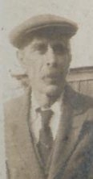
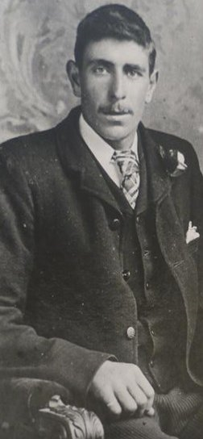
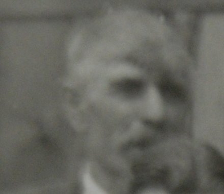
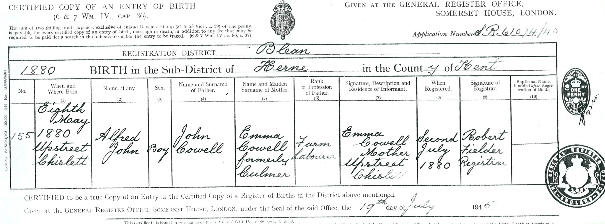
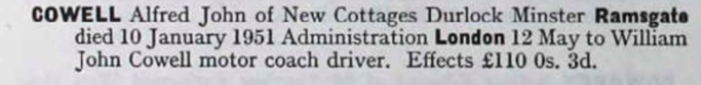
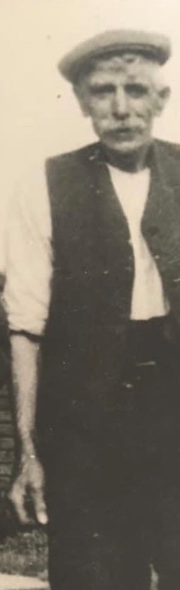
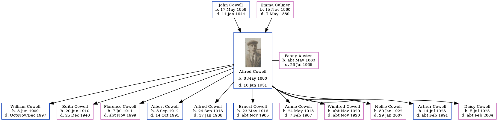

Alfred John Cowell 1880 - 1951
[ Home ] | [ Calendar ] | [ Surnames Index ] | [ Errors ] | [ Family History ]A transport driver and the child of John Cowell (a farm waggoner) and Emma Culmer, Alfred Cowell, (also known as Albert Cowell) the great-uncle of Nigel Horne, was born in Chislet, Kent, England on 8 May 18801,2,3, was baptised there at St Marys on 6 Jun 1880 and married Fanny Austen (with whom he had 11 children: William John, Edith Mary, Florence Emily, Albert Edward, Alfred, Ernest James, Annie, Winifred E, Nellie, Arthur Thomas and Daisy Ethel) at St Mildred's Church, Preston, Wingham, Kent, England on 13 Oct 19065 (St Mildreds).
During his life, he was living at Wayborough, Minster, Thanet, Kent on 3 Apr 18819; in Upstreet, Kent, England on 5 Apr 18918; at Brewery Cottages, Upper Stourmouth, Kent on 2 Apr 19117; at Durlock Farm Cottages, Minster, Thanet, Kent on 19 Jun 192110; and in Durlock, Minster, Thanet, Kent in 19356, in 1936 and on 29 Sept 1939 following the death of his wife on 28 Jul 1935. In 1921 he was working at W Pearce (Farmer) at Durlock, Minster, Thanet, Kent, England.
He died on 10 Jan 1951 at Durlock, Minster, Thanet, Kent4 (myocardial degeneration Chronic Bronchitis) and was buried at Minster Cemetery, Tothill Street, Minster in Jan 1951.
Parents
- John was born on 17 May 1858
- Emma was born on 15 Nov 1860
Children
- William John was born on 8 Jun 1909
- Edith Mary was born on 20 Jun 1910
- Florence Emily was born on 7 Jul 1911
- Albert Edward was born on 8 Sept 1912
- Alfred was born on 24 Sept 1913
- Ernest James was born on 23 May 1916
- Annie was born on 24 May 1918
- Winifred E was born c. Nov 1920
- Nellie was born on 30 Jan 1922
- Arthur Thomas was born on 14 Jul 1923
- Daisy Ethel was born on 5 Jul 1925
Citations
- 1881 England Census Online publication - Provo, UT, USA: The Generations Network, Inc., 2004. 1881 British Isles Census Index provided by The Church of Jesus Christ of Latter-day Saints © Copyright 1999 Intellectual Reserve, Inc. All rights reserved. All use is subject to the
- 1891 England Census Online publication - Provo, UT, USA: The Generations Network, Inc., 2005.Original data - Census Returns of England and Wales, 1891. Kew, Surrey, England: The National Archives of the UK (TNA): Public Record Office (PRO), 1891. Data imaged from The National
- 1911 England Census Online publication - Provo, UT, USA: Ancestry.com Operations, Inc., 2011.Original data - Census Returns of England and Wales, 1911. Kew, Surrey, England: The National Archives of the UK (TNA), 1911. Data imaged from the National Archives, London, England.
- England & Wales deaths 1837-2007 - Findmypast
- Kent, Canterbury Archdeaconry marriages 1538-1928 - Findmypast
- 1935 Kelly's Thanet Directory
- 1911 Census for England & Wales - Findmypast (was age 29 and the head of the household)
- 1891 England, Wales & Scotland Census - Findmypast (was age 10 and the son of the head of the household)
- 1881 England, Wales & Scotland Census - Findmypast (was age 0 and the son of the head of the household)
- 1921 Census Of England & Wales - Findmypast (was age 41 and the head of the household)
Notes
Used his horses to plough the land in Durlock.
Media
Albert John Cowell1

Albert John Cowell2

Albert John Cowell3

Double Wedding

Albert Cowell - Fanny Austen - marriage certificate

Albert Cowell - birth certificate

Albert John Cowell - probate

1936 Kelly's Isle of Thanet Directory

Albert John Cowell - Fanny Austen

Alfred John Cowell - 4

Alfred John Cowell - 5

1935 Kelly's Thanet Directory

Canterbury Baptisms Transcription - GBPRS-CANT-B-96111723
1939 Register Transcription - TNA-R39-1820-1820H-010-13
1911 England, Wales & Scotland Census Transcription - GBC-1911-RG14-04559-0401-3
England, Births & Baptisms 1538-1975 Transcription - R_884919128
1911 Census for England & Wales - GBC/1911/RG14/04559/0401/1
Canterbury Marriages Transcription - GBPRS-CANT-M-97051089-1
England & Wales marriages 1837-2008 - BMD/M/1906/4/AZ/000087/223
England & Wales deaths 1837-2007 - BMD/D/1951/1/AZ/000306/011
England & Wales births 1837-2006 - BMD/B/1880/3/AZ/000125/289
1881 England, Wales & Scotland Census - GBC/1881/0004825237
1921 Census of England & Wales - GBC/1921/RG15/04429/0549/01
Family Tree
Map
Generated by ged2site. Last updated on Jul 3, 2024
Known Issues
Burial date (Jan 1951) has no citations
Residence record for 29 Sep 1939 contains no citation
Residence record for 1936 contains no citation
May have been living with father on 5 Apr 1891, but the addresses don't match or aren't detailed enough to be sure
Census information missing between Census UK 1891 and Census UK 1911